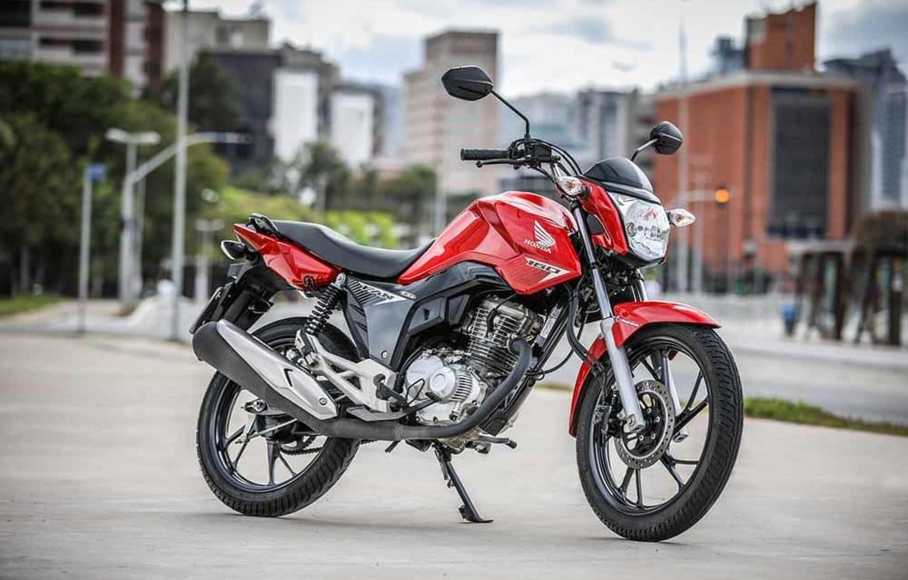
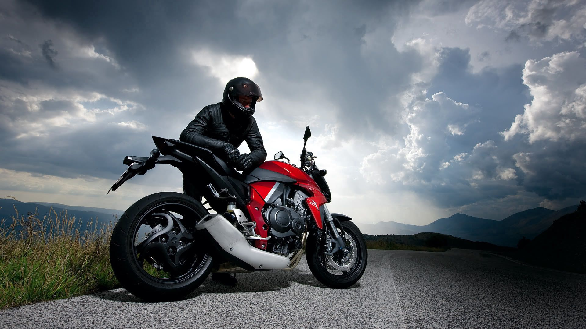
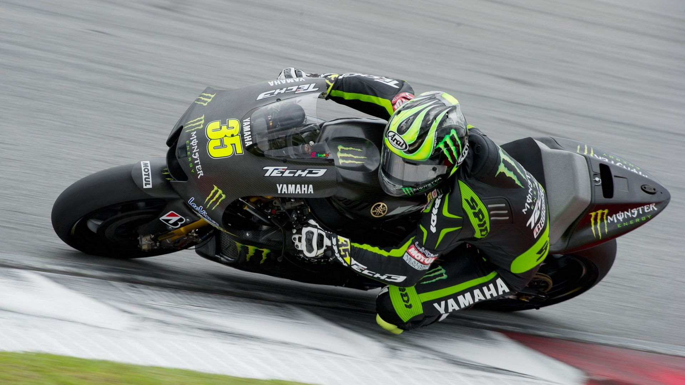
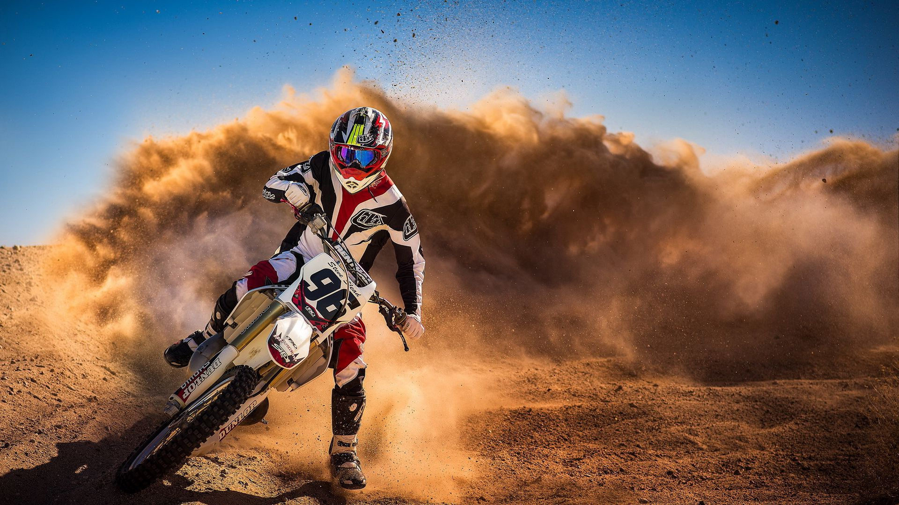

A Yamaha Fazer FZ 15 brasileira é uma motocicleta derivada de um projeto da marca japonesa
disponibilizado em diferentes mercados da Ásia. Porém, o modelo recebeu algumas mudanças exclusivas ao
mercado nacional. A FZ do Brasil teve seu farol redesenhado e apresenta grafismos inéditos, por exemplo.
Além disso, a moto nacional recebeu um motor de 150cc Blue Flex - mesmo propulsor das Factor, Crosser e
da Fazer 150. Aliás, este é o único componente que a Fazer FZ 15 têm em comum com as outras motos 150 cc
da Yamaha no Brasil.
À primeira vista, a Yamaha Fazer FZ 15 se parece em muito com uma Fazer 250, mas com um motor de 150cc.
Isso porque a “15” tem linhas mais encorpadas e a adição de carenagens extras. Tudo isso junto de itens
vistos apenas em motos de maior porte.
A FZ 15 tem suspensão dianteira com garfo telescópico de 130 mm de curso. O tubo das bengalas possui 41
mm de diâmetro, nada menos que a mesma medida das peças usadas pela naked MT-07. Na traseira, a FZ
apresenta amortecedor monoshock com ajuste de pré-carga e 120 mm de curso, item incomum para a sua
categoria.
Mas a street Yamaha tem ainda demais itens comuns apenas em motos de maior cilindrada. A FZ 15 tem rodas
de liga leve de 17 polegadas, calçadas também pneus bem mais largos.
Na dianteira, o composto tem medida de 100/80, enquanto a traseira é 140/60, mesma largura que a vista
na irmã maior Fazer 250. Já os pneus são Pirelli Diablo Rosso II. Para complementar, a moto 150 tem
freios a disco em ambas as rodas, com pinças da ByBre, subsidiária da Brembo.
Com a nova Pop 110i ES, levar a vida numa Honda é muito mais fácil. A partida elétrica do modelo garante que você tenha agilidade e comodidade no dia a dia
A CG 160 Titan é para quem não abre mão de personalidade e eficiência. Com freio ABS, LED no farol e lanterna e um design marcante, ela eleva o padrão em cada detalhe.
A CG 160 Start é perfeita para quem quer economia e qualidade. Design moderno e freios CBS, ela é ótima para enfrentar o trânsito com segurança e estilo.